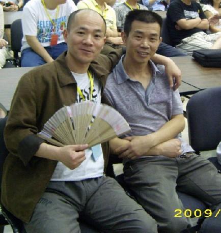

全团补照（寻找你们没见过的）4
#1 全团补照（寻找你们没见过的）4作者：忧郁的双眼 发表时间：2009-6-1 1:23:54
未曾露面的第二轮
河南大哥狐狸与浙江霸主伟鬼

那威与两位国内冠军

都在不务正业？
［ 失落刀 于 2009-6-1 6:50:25 时奖励此帖[金币加 20 威望加1］
#2 Re:全团补照（寻找你们没见过的）4作者：失落刀 发表时间：2009-6-1 6:50:03
都在不务正业？的两位是哪个呀？#3 Re:全团补照（寻找你们没见过的）4作者：无尽 发表时间：2009-6-1 7:42:49
米兰海月
#4 Re:全团补照（寻找你们没见过的）4作者：gerbo 发表时间：2009-6-1 7:50:00
 终于可以通过照片一睹狐狸大哥的风采了.
终于可以通过照片一睹狐狸大哥的风采了.#5 Re:全团补照（寻找你们没见过的）4作者：浩瀚铭剑 发表时间：2009-6-1 8:15:52
米兰海月 见那威大师了哟
见那威大师了哟#6 Re:全团补照（寻找你们没见过的）4作者：nara 发表时间：2009-6-1 8:15:56
眼睛兄，把你拍的照片都传上来看看啊！
#7 Re:全团补照（寻找你们没见过的）4作者：花月痕 发表时间：2009-6-1 9:07:45
终于看到狐狸的照片了~
米兰和海月太不争气了，害我赌输了
#8 Re:全团补照（寻找你们没见过的）4作者：舒小三 发表时间：2009-6-1 11:12:47
#9 Re:全团补照（寻找你们没见过的）4作者：启蒙 发表时间：2009-6-1 11:44:49
狐狸大哥出发的前两夜还和他聊过天，呵呵
扇子都破了，换个新的吧。河南队加油！
#10 Re:全团补照（寻找你们没见过的）4作者：习惯下棋的时候抽烟 发表时间：2009-6-1 11:59:08
 知道成都的李伯清不？
知道成都的李伯清不？